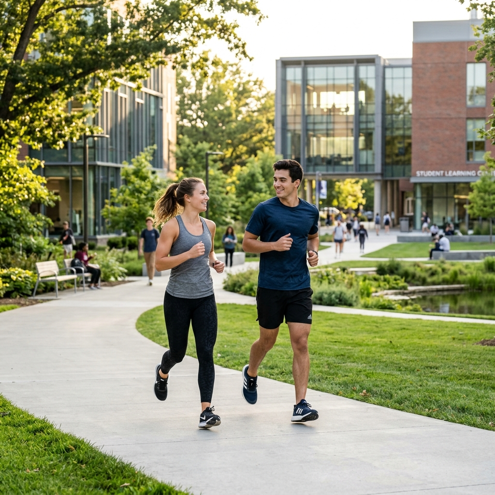

CHANGING THE WORLD.
ONE VOLUNTEER AT A TIME.
A primeira plataforma do Brasil que conecta duplas de amigos para 4 horas mensais de voluntariado — com formação digital e impacto mensurável.
Conheça a Fórmula ↗IMPACTO QUE ULTRAPASSA FRONTEIRAS
Dois amigos. Quatro horas. Infinitas possibilidades de mudar vidas.
2 Amigos + 4h/Mês + Formação Digital = Impacto Mensurável + Transformação Pessoal + Sustentabilidade
TRÊS PILARES DO HUB
Trilhas de impacto real para quem quer transformar comunidades com inovação e afeto.

ESPORTE
Eventos e experiências esportivas. Voluntariado em duplas, gamificação e reconhecimento nas arenas onde a competição encontra a causa social.
EDUCAÇÃO DIGITAL
Formação de criadores de conteúdo UGC pelo celular. Presença digital profissional para projetos sociais com tecnologia 100% mobile.
RENDA SOLIDÁRIA
Campanhas estruturadas que geram recursos e sustentabilidade para projetos sociais reais. Transparência e impacto mensuráveis.
GPTDOABEM: FORMAÇÃO DE CRIADORES DIGITAIS SOLIDÁRIOS
Transformamos iniciantes em criadores de conteúdo UGC para impulsionar projetos sociais — 100% pelo celular, financiado por patrocinadores, com impacto real.
- Presença digital, Canal Dark, autoridade digital
- Instagram, TikTok, YouTube Shorts — tudo pelo celular
- Logo no Canva, cores institucionais, identidade visual
- Storytelling, prova social, vídeos emocionais
- Funil Solidário: Conteúdo → Link → WhatsApp → Apoio
- Calendário editorial, métricas de crescimento
Ferramentas: Canva | CapCut | ChatGPT | Instagram | TikTok | WhatsApp Business | Google Drive
"Sem computador. Sua causa no bolso do mundo."
DESCUBRA A JORNADA 2DOE4
Do cadastro ao impacto real em 6 passos — projetado para quem quer mudar o mundo em dupla.
Cadastro
Empresas, Universidades, Entidades e Projetos Sociais adotam o movimento. Atletas e apaixonados por transformação entram em duplas.
Match Solidário
Duplas formadas por amigos ou via algoritmo inteligente — conectando quem quer correr pelo outro.
Escolha da Jornada
Trilha Esportiva (eventos, treinos), Trilha Digital (GPTDOABEM), ou Trilha Causa (projetos da região).
Ação
4 horas mensais: corridas, criação de conteúdo para ONGs, apoio a campanhas, mentoria a projetos sociais.
Registro & Impacto
Validação via app + registro de impacto em tempo real + geração de portfólio real.
Compartilhamento
Desafio viral: "Eu fiz. E você, @amigo?" — crescimento exponencial via desafio social.
GAMIFICAÇÃO & RECONHECIMENTO
O sistema Le Mans Social transforma horas de voluntariado em conquistas reais.
Resistência
Certificado digital 2Doe4 para a dupla.
Endurance
Selo exclusivo no LinkedIn e reconhecimento Atleta Social.
Maratona
Evento anual de premiação exclusivo para Atletas Sociais.
Le Mans Social
Experiência exclusiva + troféu físico de imersão social.
Creator Solidário
Badge de Criador Digital Certificado.
Embaixador
Status de Embaixador 2Doe4 e voz estratégica do Hub.
CAMPANHAS DOABEM
Projetos reais com metas de impacto mensuráveis e transparência total.
🏥 Projeto Piloto #CURADOABEM
Alianças pela Saúde — Brotas, Jaú e Região. Em parceria com Hospital Santa Therezinha, CRC-Jaú, APM-Jaú e Sindicato do Comércio de Jaú.
Ambulatório de curativos especiais: atendimento a pacientes com feridas complexas, reduzindo complicações, internações e amputações evitáveis.
- 300 Atendimentos mensais
- 3.600 Atendimentos anuais
- 30% Redução de reinternações
- 20% Redução de amputações evitáveis
🔥 Fase 1: "Chega de Voluntário Reborn"
Lançamento: Abril de 2026
Plataforma: Instagram @doabem
Objetivo: Ativar o exército do voluntariado digital por recompensas.
Renda revertida integralmente ao #CuraDoAbem.
❤️ Fase 2: "Santa Casa é uma Mãe que Não Te Abandona"
Lançamento: Agosto de 2026
Objetivo: Fortalecer vínculo comunitário e captar recursos.
Renda revertida integralmente ao #CuraDoAbem.
BENEFÍCIOS POR PERFIL
Cada perfil encontra valor real no ecossistema 2Doe4.
Para Empresas
Engajamento de colaboradores em duplas. Dashboard de impacto em tempo real. Conteúdo UGC autêntico. Fortalecimento da marca empregadora.
Para Universidades
Horas complementares validadas. Integração calouro-veterano. Extensão com impacto real. Formação em marketing digital social.
Para Entidades
Programa "Profissão Solidária" em duplas. Ações setoriais mensuráveis. Gamificação entre categorias. Reconhecimento público.
Para Atletas
Experiências esportivas com propósito. Formação GPTDOABEM gratuita. Descontos em eventos parceiros. Networking com marcas.
Para Projetos Sociais
Presença digital profissional. Fonte de renda via campanhas. Voluntários qualificados em duplas. Captação via funil digital.
O Manifesto
"Ninguém muda o mundo sozinho. Mas dois amigos, doando 4 horas, despertam o gigante da solidariedade brasileira."
4 horas que mudam vidas. Uma corrida que não termina na linha de chegada — e gera frutos para quem corre junto.
PRONTO PARA COMEÇAR?
Escolha como você gostaria de se conectar conosco.